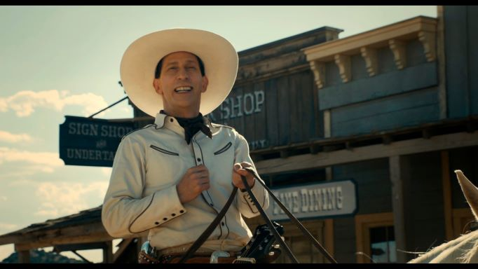
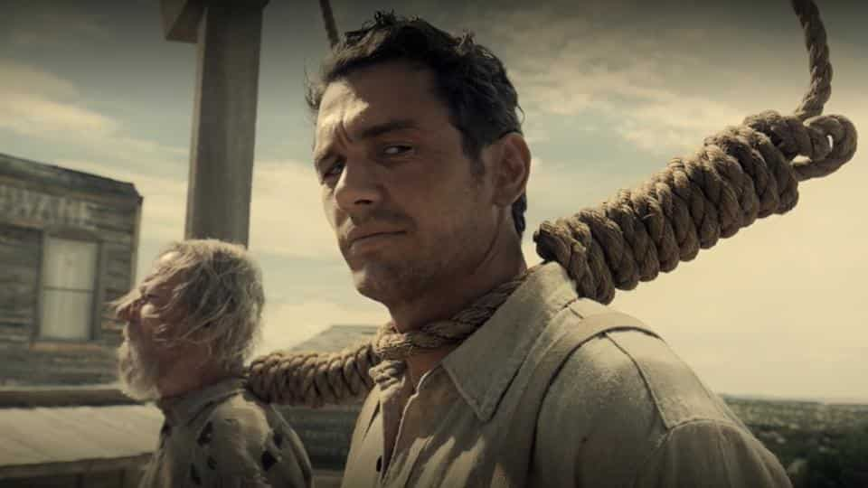
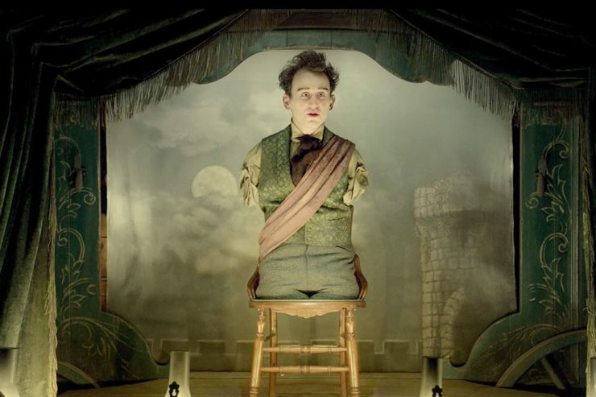
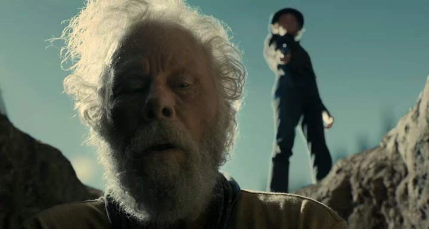
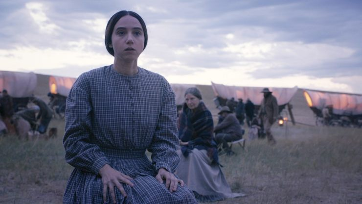
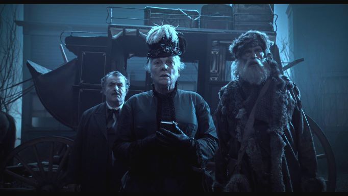

Балада про Бастера Скраггса

Бастер Скраггс, веселий співаючий ковбой, заходить у віддалену забігайлівку, сповнену злочинців, де вступає в перепалку
з образами з іншим відвідувачем, а потім легко вбиває всіх, перш ніж вони встигають дотягнутися до своїх рушниць.
Залишивши місце злочину, він прямує до салуну ущелині француза, де, залишивши свою зброю біля дверей, згідно з місцевими
правилами про відсутність вогнепальної зброї, приєднується до гри в покер. Несподівано один гравець встає з-за столу і залишає
своє місце: виявляється, йому прийшла сумнозвісна рука мерця. Інші гравці вимагають, щоб Бастер продовжив гру, оскільки бачив картинками
Бастер відмовляється, але гравець на ім'я Джо, великий чоловік, дістає захований пістолет і наполягає на вимогах компанії гравців. Не зумівши
переконати Джо припинити конфлікт, Бастер кілька разів б'є по столу покеру, в результаті рука Джо піднімається, його пістолет
виявляється спрямований назад, в обличчя Джо. Тричі вистріливши у себе, він падає мертво.
Молодий приїжджий ковбой, одягнений у чорне, чемно кидає виклик Бастерові. Бастер знову радісно погоджується, але, на подив, молодик
дістає зброю ще швидше і вбиває її пострілом у чоло. Бастер оглядає рану в подиві, перш ніж звалитися, зізнавшись за кадром, що він мав
передбачати, що «ти не можеш бути найкращим вічно». Молодий чоловік і Бастер
співають скорботно-радісним дуетом, коли дух Бастера відлітає з його тіла до неба, у нього ззаду крила ангела та в руках ліра; він висловлює
надію потрапити на місце, де люди кращі, ніж Землі.
Під Алгоденесом

Молодий ковбой грабує банк далеко у прерії. У нього стріляє касир, змушуючи ковбоя сховатися за криницею. Ковбой відстрілюється, але
касир атакує його, прикриваючись пральною дошкою і надівши кілька каструль і сковорідок як обладунки. Кулі відлітають, касир постійно хихикає:
«Постріл у сковороду!», а потім нокаутує ковбоя прикладом рушниці.
Коли ковбой приходить до тями, то виявляє себе сидячим на коні під деревом зі зв'язаними руками та петлею на шиї. Суддя та його люди пропонують
йому останнє слово, оскільки доки він був у несвідомому стані, вони «засудили» його і засудили до страти. Страта перервана нападом воїнів-команчів,
які швидко вбивають суддю та його людей, але залишають ковбоя на коні.
Через деякий час з'являється перегонник худоби та звільняє ковбоя. Вони їдуть разом, проте перегонник худоби виявляється скотокрадом, їх двох швидко
наздоганяє загін погоні.
Ковбоя доставляють до міста, де його знову засуджують до повішення. Стоячи на пласі з трьома іншими засудженими до страти чоловіками, ковбой дивиться
на сусіда зліва, що оплакує свою долю, і жартує: «Вперше?» Потім очі ковбоя спрямовуються на молоду жінку в натовпі, кат різко надягає мішок йому
на голову і відчиняє люк під його ногами. Натовп веселиться та аплодує.
Вхід за їду

Пара зі старіючого імпресаріо та артиста Харрісона, молодої людини-інваліда без рук і ніг, подорожують із міста в місто у візку, яку використовують як маленьку сцену,
з якою Харрісон театрально декламує класику, у тому числі поему Персі Біш Шеллі «Озімандія»; біблійну історію Каїна та Авеля; твори Вільяма Шекспіра, зокрема 29-й сонет,
мова Авраама Лінкольна. З ними на місці розраховуються готівкою, але заробітки зменшуються в міру того, як вони відвідують все більш віддалені гірські міста з нечисленною
і більш байдужою аудиторією.
Після вистави, яка не приносить жодного прибутку, імпресаріо знайомиться з людиною, яка розважає натовп атракціоном із куркою, яка нібито може виконувати прості математичні
обчислення. Відвідувачі дають прості завдання на додавання та віднімання, а курка клює у відповідь намальовані числа. Після купівлі курки імпресаріо проїжджає фургоном через
гірський перевал і зупиняється біля мосту через стрімку річку. Він іде до центру мосту і кидає великий камінь, щоб виміряти глибину води, перш ніж повернутись у візок.
У фінальній сцені імпресаріо їде у фургоні, але тільки курка в клітці супроводжує його як єдиний пасажир.
Увесь Голд Каньйон

Літній старатель прибуває ще не освоєну старателями гірську долину і вирішує шукати золото на трав'янистому лузі біля річки. Протягом кількох днів він промиває пісок,
вважає золоті піщинки, і, визначивши місце ймовірного залягання золота, починає копати глибоку яму. Після першого ночівлі біля багаття старатель помічає пугача,
що охороняє своє гніздо на дереві з краю долини. Старий залазить на дерево і підбирається до гнізда, пугач пильно дивиться на нього з дерева, що стоїть, що змушує
старого повернути три з чотирьох яєць, які він взяв з гнізда собі для їжі.
На третій день старий знаходить золоті самородки, розміри їх дедалі більше, нарешті, він досягає «Містера Самородка», великої золотої жили. Але тут на нього падає тінь,
і юнак, який переслідував старого і дав йому зробити всю роботу, стріляє йому в спину, той падає обличчям униз. Молодий чоловік стрибає в яму, щоб забрати золото, але старий
лише прикидався мертвим, він заволодіває пістолетом і вбиває з нього нападника. Промивши в річковому потоці свою рану і зрозумівши, що вона не смертельна, старий закінчує
видобуток золота, зіштовхує тіло юнака в яму, яка стане могилою, після чого залишає долину.
Дівчина котру настрашили

Еліс Лонгабо і її старший брат Гілберт, бізнесмен-початківець, їдуть в обозі через прерію в Орегон, де, за словами Гілберта, його новий діловий партнер одружується з Еліс
Однак незабаром Гілберт помирає від холери, не доїхавши до місця призначення, і її попутники в обозі (містер Біллі Непп та містер Артур) допомагають їй поховати її брата.
Хоча вона не має певних планів в Орегоні, Еліс вирішує продовжити подорож, а не повертатися. Метт, молодий чоловік, якого Гілберт найняв, щоб супроводжувати їхній фургон,
стверджує, що Гілберт пообіцяв йому 400 доларів, половину з яких він повинен отримати, коли вони досягнуть половини шляху до Форт Ларамі, інакше він повернеться додому.
Підозрюючи, що Гілберта поховали разом з його грошима, Еліс розповідає про своє скрутне становище Біллі, який пропонує подальшу підтримку. Він також робить Еліс послугу,
намагаючись спочатку застрелити собаку Гілберта, Пірса (названого на честь президента Франкліна Пірса), а потім проганяючи його, оскільки всі скаржилися на постійний гавкіт собаки.
Наступного ранку містер Артур зауважує, що Еліс зникла, і їде пагорбами і знаходить її з собакою брата. Еліс сміється, що собака гавкає на ховрахів. Містер Артур помічає індіанця-розвідника
та загін індіанців, він дає Еліс
пістолет, щоб у разі його загибелі вона могла застрелитися та уникнути полону. Містер Артур з гвинтівки двічі відбиває атаку індіанців, але в якийсь момент Еліс здається, що індіанець,
що причаївся, вбиває його. Містер Артур вбиває всіх індіанців, а потім розуміє, що Еліс застрелилася, як він і наказав їй вчинити у разі його смерті. Він сумно повертається до обозу з собакою,
не знаючи, що сказати Біллі Неппу.
Останки

На заході сонця п'ять чоловік: англієць Тігпен, ірландець Кларенс, француз Рене, місіс Бетжеман і мисливець, що займається хутровим промислом, їдуть у Форт-Морган, штат Колорадо, на диліжансі.
Тігпен каже, що він і Кларенс часто проїжджають цим маршрутом «переправляючи вантаж» (насправді трупи на даху), але він не уточнює мети їхніх поїздок.
Мисливець багато і плутано розповідає про свої минулі стосунки з жінкою з племені хункпапа, з якою не міг розмовляти, оскільки вони не знали мови один одного, але спілкування через розуміння
емоцій одне одного привело мисливця до висновку, що всі люди однакові у своїх основних потребах. так само, як тварини, на яких він полює.
Місіс Бетжеман, побожна християнка, з обуренням заперечує, що є лише два типи людей, праведні та грішні. Вона знає це тому, що її чоловік, до якого вона їде після трьох років розлуки, читав лекції
для руху Шатокуа з «моральної та духовної гігієни». Рене кидає виклик і її міркуванням, і висновків мисливця, своїми роздумами про унікальну та суб'єктивну природу людського досвіду.
Наприклад, Рене запитує, чи думає містер Бетжеман про кохання так само, як місіс Бетжеман, припускаючи, що якщо це не так, то, можливо, він не залишався вірним їй під час їхньої розлуки.
Кларенс співає сумно-радісну народну пісню «Нещасний хлопець», яка заспокоює місіс Бетжеман. З'ясовується, що Кларенс та Тігпен є «женцями» чи мисливцями за головами. Тігпен каже, що їхній
звичайний метод полягає в тому, що він відволікає майбутню жертву історіями, тоді як Кларенс «обробляє» її. Тігпен повідомляє, що йому подобається спостерігати, як їхня жертва вмирає, особливо
за виразом її очей, коли вони «домовляються про переправу» і «намагається зрозуміти зміст цього».
Інші троє явно стривожені цим, коли вони прибувають у темний і похмурий готель у Форт-Моргані, де всі зупиняться на ночівлю, і залишаються у диліжансі, поки Тігпен та Кларенс несуть труп у готель.
Потім вони повільно виходять і диліжанс від'їжджає без розвантаження багажу. Рене, місіс Бетжеман та мисливець обережно проходять через вхідні двері до готелю.